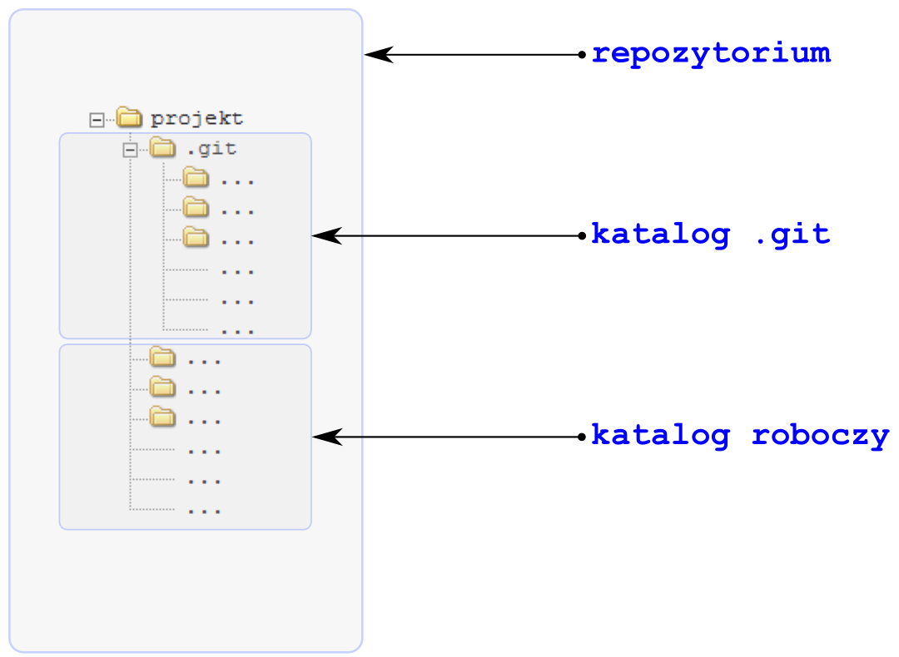

Warsztat developera
GIT i VAGRANTver. 0.1.1
O MNIE
Włodzimierz Gajda, http://gajdaw.pl
- wykładowca KUL
- trener
- autor podręczników
Wykładowca : 20 lat
1995 - 2015
Trener
Klienci:
Książki
Apress
Od 2013 roku piszę dla APress
Kontakt
- gajdaw@gajdaw.pl
- http://gajdaw.pl
- http://github.com/gajdaw
- https://www.linkedin.com/in/gajdaw
O czym będziemy mówili?
GIT, GITHUB i VAGRANT
- GIT - rozproszony system kontroli wersji
- GITHUB - hosting repozytoriów git
- VAGRANT - narzędzie do pracy z systemami wirtualnymi
Dla tych, którzy nie znają tych narzędzi moje wystąpienie może służyć jako zachęta.
Dla tych, którzy znają te narzędzia referat może służyć jako przegląd.
W trakcie referatu postaram się
wskazać pułapki, które
git
i vagrant
zastawiają na nowicjuszy.
Podpowiem jak je omijać.
Przedstawię Vagrant-a w akcji.
Temu będzie służyła prezentacja: cztery frameworki w cztery minuty.
Opowiem o tym, jak GitHub zmienił mój sposób prowadzenia zajęć i szkoleń.
GIT i VAGRANT
NARZĘDZIA, KTÓRE ZMIENIŁY SPOSÓB PRACY
NIE TYLKO DEVELOPERÓW
GITHUB
SERWIS, KTÓRY ZMIENIŁ SPOSÓB PRACY
NIE TYLKO DEVELOPERÓW
Prosty sposób na GIT-a
Prosty sposób na VAGRANT-a
PLAN REFERATU
- GIT
- VAGRANT
- GITHUB
- Podsumowanie
- Pytania
GIT
- Systemy kontroli wersji
- Cechy GIT-a
- Historia GIT-a
- Struktura repozytorium
- Charakterystyka repozytorium
- Graf rewizji
- Gałęzie
- Stany plików
- Komendy gita
- Git - zaglądamy pod maskę
VAGRANT
- Środowiska developerskie
- Cechy
- Cztery frameworki w cztery minuty
- Nauka Vagrant-a
GIT
Systemy kontroli wersji
Systemy kontroli wersji
- CVS, SVN (Subversion)
- Git, Bazar, Mercurial
- Perforce, BitKeeper
- Microsoft Team Foundation Server
Analiza rynku
Na rynku dominuje GIT
Cechy GIT-a
Cechy GIT-a
- Git + Github = standaryzacja pracy
- Portfolio developera
- Rozgałęzianie
- Lokalność
- Kontrola spójności danych
- Rozproszony model pracy
- Dodatkowy wymiar projektu: czas
- Staging area (indeks)
- Różnicowy backup
- System OpenSource
- GitHub-Driven Teaching
Standaryzacja pracy
- jeden workflow do pracy w wielu projektach
- Symfony, jQuery, AngularJS, D3, Ruby, Rails, ...
Portfolio developera
- Twoja praca w projektach OpenSource jest widoczna
- https://github.com/symfony/symfony/graphs/contributors
Gałęzie
- współbieżność
- porzucanie nietrafionych pomysłów
- ślad w historii
- praca grupowa
Lokalność
Lokalność === efektywność (bez transferu)
Lokalność === niezależność (nie muszę się łączyć)
Operacje lokalne:
- komitowanie
- tworzenie gałęzi
- wszystkie operacje na gałęziach
Kontrola spójności
- nikt nie może wprowadzić niezauważonych zmian
- automatyczne pilnowanie narzędzi/skryptów
System rozproszony
- możliwość przesyłania komitów do dowolnych repo
- różne modele organizacji pracy (workflow)
Dodatkowy wymiar projektu: czas
- weryfikacja czyichś umiejętności
- rekrutacja
- testy, egzaminy
- GitHub-Driven recruitment
Staging area (indeks)
- dostosowywanie rewizji
- możemy komitować dowolne pliki
- możemy komitować fragmenty plików
Różnicowy backup
- efektywny sposób na backupowanie
System OpenSource
GitHub-Driven Teaching
Wady?
- czas nauki
- kradzież źródeł: klonowanie daje pełne informacje o projekcie
Git to DVCS. Nie zawiera bugtrackera, raportów, ani innych narzędzi. Dlatego trudno go porównywać do np. MS Team Foundation Server. Pod względem VCS: git bije MS TFS o kilka klas.
Historia GIT
Jak to się zaczęło?
- Do roku 2005 Linux był prowadzony przy użyciu systemu BitKeeper
- W 2005 BitKeeper przestał być dystrybuowany jako bezpłatne oprogramowanie dla projektów OpenSource
- Linus Torvalds zdecydował się na implementację własnego systemu VCS
GIT ma 10 lat!
Pierwszy komit
https://github.com/git/git/commit/e83c5
Data: Thu Apr 7 15:13:13 2005 -0700
Początek historii Linux-a
https://github.com/torvalds/linux/commit/1da177e
Data: Sat Apr 16 15:20:36 2005 -0700
Struktura repozytorium
Repozytorium zawiera:
- katalog
.git - katalog roboczy
- baza danych
- staging area (indeks)
Struktura repozytorium
Struktura repozytorium
Przebieg pracy

Trzy snapshoty
- HEAD - ostatni komit
- index (staging area)
- katalog roboczy
Analiza komend w kontekście snapshotów
Na przykład komenda git reset
| HEAD | index | katalog roboczy |
|
|---|---|---|---|
--soft |
TAK | ||
--mixed |
TAK | TAK | |
--hard |
TAK | TAK | TAK |
Charakterystyka
repozytorium
Repozytorium:
- zwykłe/bare
- czyste/brudne
- na gałęzi/detached HEAD
- zsynchronizowane/[ahead n, behind m]
Zwykłe/bare
Czy zawiera katalog roboczy?
- NIE - bare
- TAK - zwykłe
# tworzenie repozytoriów bare
$ git init --bare
$ git clone --bare
Czyste/brudne
Czy zmodyfikowano pliki?
- NIE - czyste (ang. clean)
- TAK - brudne (ang. dirty)
$ git status
$ git status -s
$ git status -sb
Na gałęzi/detached head
Czy znajdujemy się w gałęzi czy poza gałęzią?
- poza gałęzią - detached HEAD
# schodzimy z gałęzi
$ git checkout [SHA-1]
# wracamy do gałęzi
$ git checkout master
# czy jesteśmy w gałęzi?
$ git status -sb
$ git branch
ahead n, behind m
Czy bieżąca gałąź jest zsynchronizowana z gałęzią śledzącą?
W pewnym uproszczeniu można to interpretować jako:
- ile jest rewizji na serwerze, których nie mam lokalnie: BEHIND
- ile mam rewizji lokalnie, których nie ma na serwerze: AHEAD
ahead n, behind m
$ git status -sb
## master...origin/master [ahead 3, behind 10]
Analiza komend
w kontekście stanu repo
Komendy gita możemy omawiać
pod względem ich wpływu na całe repo.
GRAF REWIZJI

Analiza komend
w kontekście grafu
Jak dana komenda modyfikuje graf rewizji?
GAŁĘZIE
Gałąź to wksaźnik do rewizji.
CZTERY RODZAJE GAŁĘZI
- Gałęzie zdalne
- Gałęzie zwykłe
- Lokalne gałęzie śledzące
- Zdalne gałęzie śledzące
Gałęzie lokalne i zdalne
Gałęzie lokalne
- Gałęzie zwykłe (ordinary local branches):
w repozytorium lokalnym w katalogurefs/heads - Lokalne gałęzie śledzące (local tracking branches):
w repozytorium lokalnym w katalogurefs/heads - Zdalne gałęzie śledzące (remote traking branches):
w repozytorium lokalnym w katalogurefs/remotes/origin
Analiza komend
w kontekście gałęzi
Komendy gita możemy charakteryzować
ich wpływem na gałęzie.
Przesuwanie gałęzi
STANY PLIKÓW
Analiza komend
w kontekście stanu
Komendy gita możemy omawiać
odwołując się do stanów plików.
?? => A_
# zmiana stanu ?? w stan A_
$ git add -- [filename]
D_ => _D
# zmiana stanu D_ w stan _D
$ git reset -- [filename]
# przywracanie pliku _D
$ git checkout -- [filename]
M_ => _M
#konwersja stanu M_ w stan _M
$ git reset -- [filename]
Komendy
Analiza komend GIT
w kontekście:
- stanu plików
- grafu rewizji
- trzech snapshotów
- stanu repozytorium
- stanu gałęzi
GIT
zaglądamy pod maskę
Baza danych
Git to baza danych adresowana treścią.
Dokładniej: skrótem SHA-1 treści.
Folder .git/objects
Baza danych znajduje się w folderze .git/objects
# zapisywanie danych w bazie
$ git hash-object
#wyświetlanie danych z bazy
$ git cat-file
# wyszukiwanie obiektów (każdy obiekt to jeden plik)
$ find
Zapisywanie danych
$ git init content-addresable-database
$ find .git/objects –type f
$ echo 'Ala ma kota' | git hash-object -w --stdin
84321884cdb0ca2d5ec012c2139ca1bf98ae5be6
$ git cat-file -p 8432
$ echo 'Kot ma Ale' > plik.txt
$ git hash-object –w plik.txt
Rodzaje obiektów
Obiekty zapisywane w bazie danych:
- Blob
- Tree
- Commit
- Tag
# wyświetlanie typu obiektu
$ git cat-file –t [SHA-1]
# wyświetlanie treści obiektu
$ git cat-file –p [SHA-1]
Obiekty - ćwiczenie
# tworzymy komit
$ git init
$ echo Lorem > lorem.txt
$ git add –A
$ git commit –m Pierwsza
# sprawdzamy obiekty
$ find .git/objects –type f
$ git cat-file –t [SHA-1]
$ git cat-file –p [SHA-1]
Formaty loose i packed
Loose object format – każdy obiekt zapisany w osobnym pliku w folderze .git/objects
Packed object format – objekty zgrupowane i spakowane w folderze .git/objects/packs
W formacie spakowanym zapisujemy ostatnią postać pliku i różnice wsteczne. W ten sposób obszar zajmowany przez repozytorium jest minimalizowany.
Szczegółowy opis
Nauka GIT-a...
...wymaga cierpliwości
VAGRANT
Virtualne środowiska developerskie
Problem
- Dostarczenie uczestnikom szkolenia środowiska developerskiego.
- Dostarczenie developerowi środowiska pracy.
Rozwiązanie
Uruchomienie na komputerze developera/studenta systemu wirtualnego.
CECHY ŚRODOWISK VM
- Uruchomienie środowiska: automatyczne i "szybkie"
- Odwzorowanie: 1:1 z serwerem produkcyjnym
- Izolacja projektów
- Standaryzacja workflow
- Minimalizacja czasu wdrażania nowego developera
- Brak powiązania projektu z maszyną
- Uczestnik szkolenia może "zabrać" środowisko do domu
- Centralizacja konfiguracji projektu
- Możemy psuć system VM do woli
- Platforma developera nie ma znaczenia
Z punktu widzenia trenera:
absolutnie nieprawdopodobne możliwości
vagrant up
Wady
- Wydajność...
- Rozwiązanie: lekkie kontenery (np. Docker)
Cztery frameworki
w
cztery minuty
Instalacja oprogramowania
- VirtualBox
- Vagrant
- git
Projekty
- Projekt AngularJS
- Projekt Django
- Projekt Rails
- Projekt Symfony
https://github.com/pro-vagrant/songs-app-angularjs
https://github.com/pro-vagrant/songs-app-django
https://github.com/pro-vagrant/songs-app-rails
https://github.com/pro-vagrant/songs-app-symfony
Uruchommy cztery projekty
Songs for kids
AngularJS
git clone https://github.com/pro-vagrant/songs-app-angularjs.git
cd songs-app-angularjs
vagrant up
Songs for kids
Django
git clone https://github.com/pro-vagrant/songs-app-django.git
cd songs-app-angularjs
vagrant up
Songs for kids
Rails
git clone https://github.com/pro-vagrant/songs-app-rails.git
cd songs-app-angularjs
vagrant up
Songs for kids
Symfony
git clone https://github.com/pro-vagrant/songs-app-symfony.git
cd songs-app-angularjs
vagrant up
Nauka VAGRANT-a...
...wymaga dużo cierpliwości, gdyż...
NALEŻY OPANOWAĆ SCM
SCM - software configuration management
- Puppet
- Chef
- Ansible
- Salt
Czym jest Vagrant?
Vagrant to nakładka na środowiska wirtualizacyjne takie jak VirtualBox-a, VMware, Docker, itd.
Od czego zacząć?
Komendy Vagrant-a:
vagrant up
vagrant status
vagrant destroy
vagrant halt
vagrant suspend
vagrant reload
vagrant provision
vagrant box add
vagrant box remove
vagrant box update
Vagrantfile
Vagrant.configure(2) do |config|
config.vm.box = "rails-v0.5.5"
config.vm.box_url = "http://boxes.gajdaw.pl/rails/rails-v0.5.5.box"
config.vm.network :forwarded_port, guest: 3000, host: 3000
end
Pułapki
- Dwie role: administrator/developer
- Generowanie własnych boxów bazowych:
packer - Boxy dla aplikacji: wszystkie składniki w środku boxa
- Oddzielne projekty: box i aplikacja (oddzielne repo)
- Użycie modułów SCM (każdy moduł - oddzielne repo)
- Semantyczne wersjonowanie
Antywzorce
Osadzenie konfiguracji boxa w aplikacji
(bez oddzielnego repo na box)
Antywzorce
Osadzenie submodułów w boxie
(bez oddzielnego repo na moduły)
https://github.com/pro-vagrant/vagrant-box-factory-apache-antipattern
Wzorce poprawne
Projekty: aplikacja, box, moduły
https://github.com/pro-vagrant/songs-app-rails
GITHUB
Co trzeba wiedzieć o GITHUBIE?
CECHY
- hosting repozytoriów git
- hosting binarek
- issue tracker
- pull request
- grupownie projektów (organizacje)
- grupy programistów (team)
- zarządzanie uprawnieniami do repo
- hosting HTML/CSS
- hosting projektów Jekyll
- największy uniwerek dla programistów
Prezenty od GitHub-a
Student Developer Pack
GitLab
Aplikcaja OpenSource o funkcjonalności zbliżonej do GitHub-a.
Uruchomienie GitLab-a: Droplet DigitalOcean
Podsumowanie
GIT - to trzeba umieć
GITHUB - to trzeba umieć
VAGRANT - to trzeba spróbować
PUPPET | CHEF | ANSIBLE - to trzeba spróbować
DIGITAL OCEAN DROPLET | GITLAB
to trzeba spróbować
GITHUB-DRIVEN TEACHING
GITHUB-DRIVEN RECRUITMENT
VAGRANT-DRIVEN TEACHING
Pytania?
Dziękuję bardzo :-)
Prezentacja jest dostępna na:
https://github.com/gajdaw/ldi-2015-git-vagrant
http://gajdaw.github.io/ldi-2015-git-vagrant/